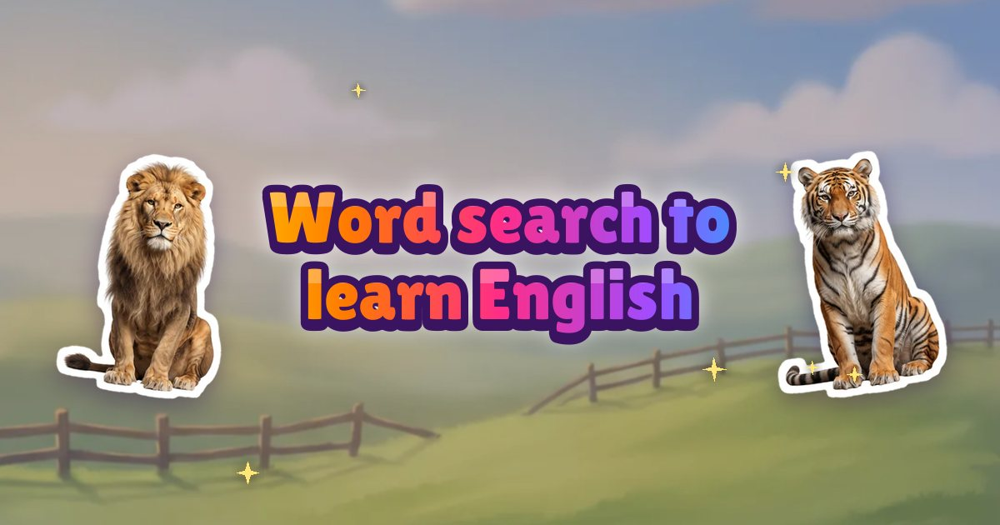
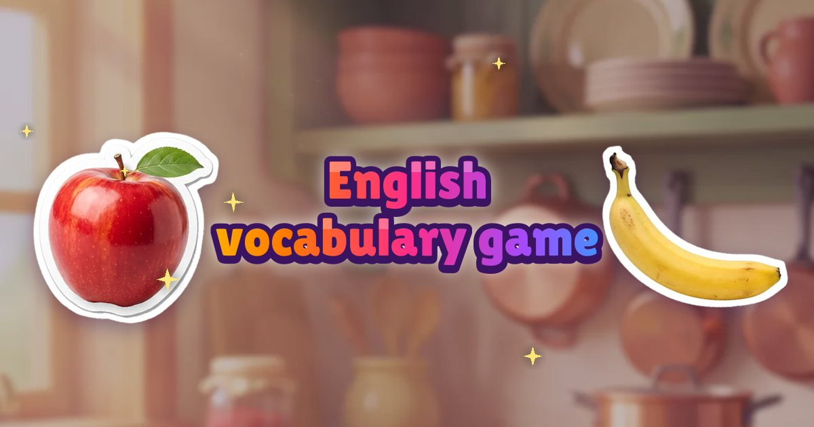
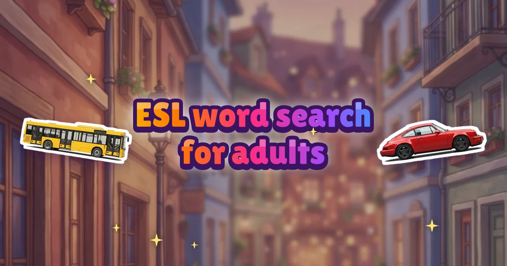
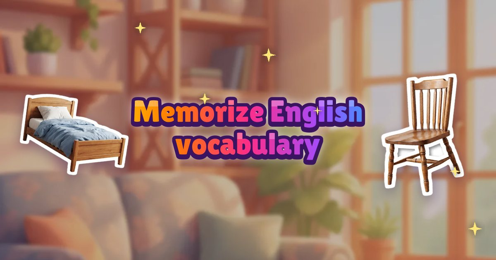
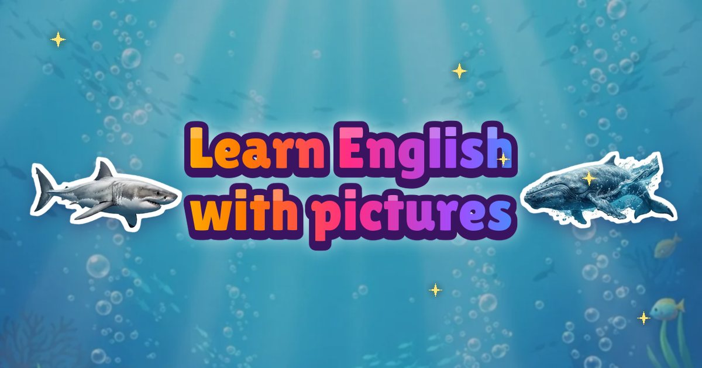

Guides to learning English words
Short, honest guides on how vocabulary sticks, and how to put each idea into practice with Word Search: Learning English.

How to Use Word Search Puzzles to Learn English
Turn a classic puzzle into a vocabulary routine that actually sticks.
Read the guide →
English Vocabulary Game: How to Pick One That Teaches You
What separates a vocabulary game that teaches from one that just entertains.
Read the guide →
ESL Word Search for Adults, Not Kids' Worksheets
Word search practice for adult English learners, without the kids' worksheets.
Read the guide →
How to Memorize English Vocabulary So It Sticks
The method behind words that stay: pictures, sound, recall and review.
Read the guide →
Learn English With Pictures: Why Images Make Words Stick
Why a picture beats a translation list, and how to practise with one.
Read the guide →
English Words for Beginners: Where to Start
The first English words worth learning, and in what order.
Read the guide →
How to Learn the Pronunciation of New English Words
English spelling lies about sound. Learn every new word with its audio.
Read the guide →
Do Word Searches Help You Learn a Language?
What word searches do and don't teach, and how to make them count.
Read the guide →
Can You Learn English in 10 Minutes a Day?
Why ten minutes every day beats an hour once a week, plus a routine.
Read the guide →